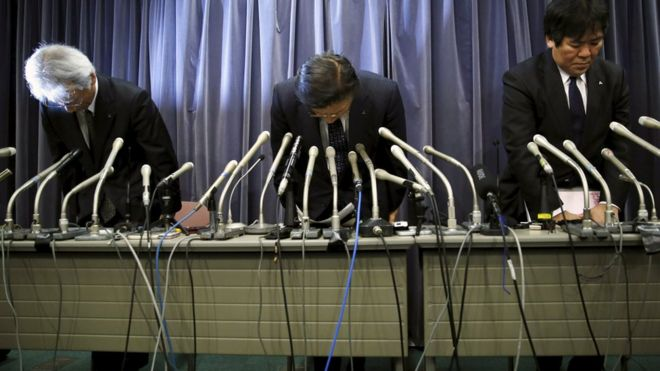

news
Also in the News
NZ stages first Pastafarian wedding

Mountain lion removed after being found at Los Angeles school
Mitsubishi Motors admits falsifying fuel economy tests
Mitsubishi Motors has admitted falsifying fuel economy data for more than 600,000 vehicles sold in Japan.
Tyre pressure figures were falsified by employees to flatter mileage rates, the company said.
Almost 470,000 vehicles that Mitsubishi made for Nissan were affected and the issue was uncovered after Nissan found inconsistencies.
The announcement sent shares in Mitsubishi down more than 15% in Tokyo.
Company bosses, including Mitsubishi Motors president Tetsuro Aikawa, bowed deeply at the start of a press conference on Wednesday afternoon in Tokyo.
"The wrongdoing was intentional. It is clear the falsification was done to make the mileage look better. But why they would resort to fraud to do this is still unclear," he said.READ MORE ➞

Paula Malcolmson’s Trixie, a prostitute in the Western series Deadville, became the moral centre of the programme as it evolved (Credit: HBO)
Breaking Bad's Wendy, by contrast, is initially not much more than a sight gag, though one whose character grows over her three appearances in the series. At first, she's the spaced-out, meth-addicted sex partner of Jesse Pinkman (Aaron Paul), and is used as a this-could-be-your-life example by DEA Agent Hank Schrader (Dean Norris) when he cluelessly attempts to caution his nephew about the dangers of drug use. But she takes on new shades in her third and final appearance, during a sex montage scored to The Association's upbeat pop hit Windy. With every customer she encounters she becomes that much more of a tragic figure.